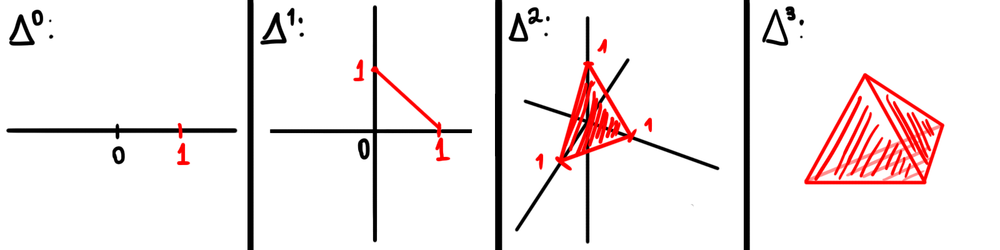
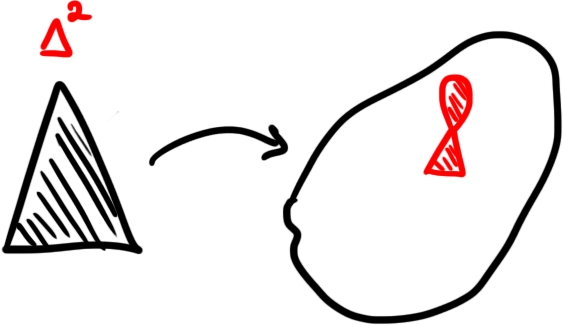
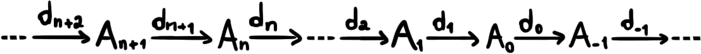
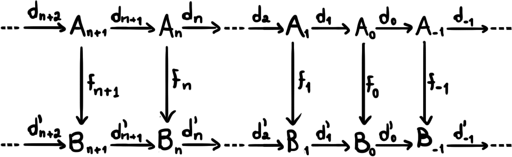
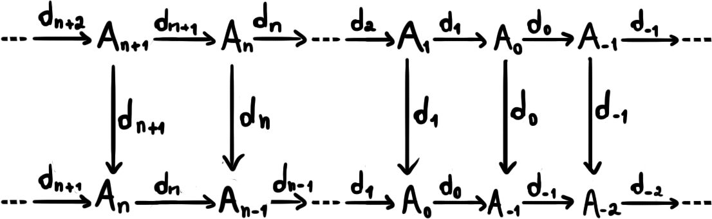
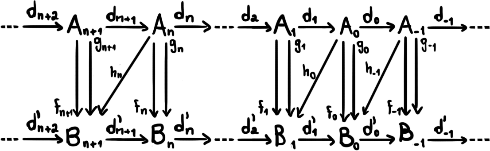

Invariantes e Homologia
Invariantes
No curso sobre o grupo fundamental e sobre espaços de recobrimento, aprendemos sobre como definir um importantíssimo invariante topológico, ou seja, uma propriedade sobre espaços preservada por homeomorfismos. Acontece que existem muitos outros invariantes e, em particular, dois destes serão muito úteis para nós, portanto vamos estudá-los com mais detalhe: os grupos de homologia e os grupos de cohomologia. Porém, antes de chegarmos neles, vamos passar rapidamente por outros invariantes que aparecem na natureza para estimular a curiosidade e perceber que a matemática é de fato bem maior do que aparenta.
Definimos o grupo fundamental $\pi_1(X, x_0)$ como uma coleção de caminhos fechados com ponto-base $x_0$ ou de mapas $\gamma \colon \mathbb{S}^1 \to X$ tais que $x_0 \in \textrm{Im }\gamma$ (lembrando que existe uma correspondência entre ambos os conceitos, que foi vista também no curso sobre o assunto). De maneira análoga podemos definir os outros grupos de homotopia, que são grupos que se comportam de maneira similar ao grupo fundamental.
Se $X$ é um espaço qualquer, dado $x_0 \in X$ defina $\pi_n(X, x_0)$ como sendo o quociente $C/\sim$, onde $C$ é o conjunto de todos os mapas $f \colon \mathbb{S}^n \to X$ tais que $x_0 \in \textrm{Im }f$ e $\sim$ é a relação de homotopia. Esses conjuntos são grupos com as operações corretas e também são preservados por homeomorfismos. Existem relações entre esses grupos e definições precisas, que não serão abordadas neste curso.
Será que podemos generalizar ainda mais essa construção? Bem, existe uma classe de espaços que engloba todos os espaços da forma $\mathbb{S}^n$, que são as variedades. De fato, dada $M$ uma variedade $n-$dimensional, $X$ um espaço qualquer e $x_0 \in X$, podemos definir os
Simplexos
Um dos principais invariantes topológicos que serão estudados neste curso é a homologia singular, porém, antes de construirmos uma definição precisa para esta, precisamos estabelecer algumas outras definições. Definimos a envoltória convexa $[M]$ de um conjunto $M \subset \mathbb{R}^n$ como sendo o menor conjunto $C$ convexo tal que $M \subset C$. Explicitamente, podemos escrever $[M] = \bigcap_\mathcal{C} C$, onde $\mathcal{C} = \{C \subset \mathbb{R}^n \colon M \subset C, C$ é convexo$\}$.
Proposição 01: dados $e_0, \dots, e_n \in V$, as afirmações a seguir são equivalentes:
não existe $W$ subespaço afim $(n-1)-$dimensional contendo $e_0, \dots, e_n$;
$e_1 - e_0, \dots, e_n - e_0$ são linearmente independentes.
Demonstração: se $e_1 - e_0, \dots, e_n - e_0$ são linearmente dependentes, seja $W = \langle e_1 - e_0, \dots, e_n - e_0 \rangle$. Sabemos que $\dim W \leq n-1$. Seja então $W'$ um subespaço de $V$ contendo $W$ tal que $\dim W' = n-1$. Perceba que $0, e_1 - e_0, \dots, e_n - e_0 \in W'$ e assim $e_0, e_1, \dots, e_n \in W' + e_0$.
Se existe um subespaço afim $A$ tal que $e_0, \dots, e_n \in A$, tome o espaço $A - e_0$. Perceba que como $\dim A = n - 1$ e $A \simeq A - e_0$, temos que $\dim A - e_0 = n-1$. Além disso, $e_1 - e_0, \dots, e_n - e_0$ são $n$ elementos de um espaço vetorial $(n-1)-$dimensional, portanto obrigatoriamente são linearmente dependentes. $\blacksquare$
Um $n-$simplexo é uma envoltória convexa de vetores $e_0, \dots, e_n$ satisfazendo alguma das condições da proposição acima. Mais especificamente, podemos escrever $[e_0, \dots, e_n] = \{\sum t_ie_i \colon t_i \geq 0, \sum t_i = 1\}$. Chamaremos de $n-$simplexo canônico o simplexo gerado pela base canônica de $V$, denotando-o por $\Delta^n(V)$ ou apenas $\Delta^n$ se $V = \mathbb{R}^{n+1}$.
Os $4$ primeiros simplexos canônicos em espaços euclideanos.
Para cada $n \geq 0$, defina o $n-$ésimo grupo de cadeia singular $\mathcal{C}_n^{\textrm{sing}}(X)$ como sendo $\textrm{Free}_{\textrm{Ab}}(\sigma \colon \Delta^n \to X \mid \sigma$ é contínuo$)$. Chamaremos um mapa $\sigma \colon \Delta^n \to X$ de $n-$simplexo singular. A palavra "singular" no nome do mapa vem deste não ser necessariamente injetor, pois isso faz com que possamos ter singularidades, como a que está no desenho abaixo. Além disso, se $n < 0$, vamos definir $\mathcal{C}_n^{\textrm{sing}}(X)$ como sendo o grupo trivial.
O mapa neste caso pega um segmento ligando duas das arestas de $\Delta^2$ e o leva para apenas um ponto, criando a singularidade.
Chamaremos um elemento de $\mathcal{C}_n^{\textrm{sing}}(X)$ de uma $n-$cadeia singular.
Álgebra Homológica
Um complexo de cadeia é uma sequência de $R-$módulos ($R$ geralmente será $\mathbb{Z}, \mathbb{Q}, \mathbb{R}, \mathbb{C}$ ou $\mathbb{Z}_2$.) $\dots, A_{-1}, A_{0}, A_1, \dots$ conectados por morfismos chamados de morfismos de fronteira (nome familiar, não?) da seguinte forma:
Além disso, pedimos que $d_{n-1} \circ d_n = 0$ ou, equivalentemente, que $\textrm{Im } d_n \subset \ker d_{n-1}$. Diremos que um complexo de cadeia é exato quando $\textrm{Im } d_n = \ker d_{n-1}$. No contexto de complexos de cadeias, podemos definir o que é um morfismo de complexos, que dará uma estrutura de categoria para a classe de todos os complexos de $R-$módulos, para um $R$ fixado. Se denotarmos o complexo de cadeia dos anéis $\dots, A_{-1}, A_0, A_1, \dots$ por $A_*$, um morfismo $f \colon A_* \to B_*$ é uma família de mapas $f_i \colon A_i \to B_i$ tais que o diagrama abaixo comuta
Um outro jeito de pensarmos no morfismo $f$ é definindo $A_\ast$ como a soma direta $\oplus_i A_i$. Nesse caso, poderíamos definir $f$ como sendo o mapa $x_i \in A_i \mapsto f_i(x_i)$ e portanto podemos enxergar cada $f_i$ como $f|_{A_i}$. Isso será importante para uma questão de notação que encontraremos ao analisarmos o próximo operador importante entre cadeias, que será um tipo de morfismo.
Se em $B_\ast$ tomarmos cada $B_i$ como sendo $A_{i-1}$ podemos construir o morfismo $d \colon A_\ast \to B_\ast$, que seria a família dos morfismos de fronteira $d_i \colon A_i \to A_{i-1}$. Perceba que esse mapa $d$ é de fato um morfismo de complexos, pois o diagrama abaixo comuta trivialmente. O argumento da restrição feito no exemplo acima pode ser copiado aqui, e é por isso que usualmente quando queremos escrever $d_{n+1} \circ d_n$ escrevemos $d^2$ e, além disso, é comum também escrevermos $d$ para representar qualquer um dos morfismos de fronteira, como veremos no último operador importante, que será explicado a seguir.
O último operador importante do qual vamos tratar é a homotopia de morfismos de cadeias. Dados dois morfismos de cadeias $f,g \colon A_\ast \to B_\ast$, podemos criar o mapa $h \colon A_\ast \to B_\ast$, que é também uma família de mapas $h_i$, mas que agora satisfazem $h_i \colon A_i \to B_{i+1}$. Além disso, pediremos que $h$ satisfaça $f - g = hd + dh$ ou, com a notação um pouco mais explicita, $f_i - g_i = h_i \circ d'_{i+1} + d_{i} \circ h_{i+1}$. O diagrama abaixo ilustra o processo, porém, devemos tomar o cuidado de notar que o diagrama não é comutativo neste caso.
Já conhecidos os principais operadores, podemos falar de exatidão. Dado um complexo de cadeia, gostaríamos de achar um jeito de medir o quão exato este é, ou seja, achar algum parâmetro que indicasse o nível de exatidão, o quão perto estamos de ter a imagem igual ao kernel. De fato, esse indicador existe e se chama grupo de homologia. Se $\dots, A_{-1}, A_0, A_1, \dots$ é um complexo de cadeias, definimos por $H_n(A_\ast) = \ker{A_n \to A_{n-1}}/\textrm{Im }A_{n+1} \to A_n$ o grupo de homologia de $A_\ast$.
Homologia Singular
Agora que já conhecemos os grupos de cadeia singular, vamos provar que estes formam um complexo de cadeia. Primeiro, perceba que cada $\mathcal{C}_n^{\textrm{sing}}$ é um grupo abeliano, portanto um $\mathbb{Z}-$módulo. Basta então mostrarmos que os morfismos de fronteira dos grupos de cadeia são de fato morfismos de cadeia de complexo. Para isso, precisamos definir quem são os morfismos de fronteira: defina $d_n \colon \mathcal{C}_n^{\textrm{sing}}(X) \to \mathcal{C}_{n-1}^{\textrm{sing}}(X)$ por $\sigma \mapsto \sum (-1)^i \sigma|_{[e_0, \dots, e_{i-1}, e_{i+1}, \dots, e_n]}$, para $\sigma \colon \Delta^{n} = [e_0, \dots, e_n] \to X$. Por convenção, vamos representar este sigma por $(e_0, \dots, e_n)$ e também vamos representar $\sigma|_{[e_0, \dots, e_{i-1}, e_{i+1}, \dots, e_n]}$ por $(e_0, \dots, \hat{e_i}, \dots, e_n)$.
Proposição 02: $d^2 = 0$
Demonstração: temos $d^2(e_0, \dots, e_n) = \sum (-1)^i d(e_0, \dots, \hat{e_i}, \dots, e_n)$ e portanto precisamos calcular cada um dos termos da série. Para isso, perceba que $$\begin{array}{ll} d(e_0, \dots, \hat{e_i}, \dots, e_n) =&(\hat{e_0}, e_1, \dots, \hat{e_i}, \dots, e_n) - (e_0, \hat{e_1}, e_2, \dots, \hat{e_i}, \dots, e_n) + \cdots\\ &\cdots + (-1)^{i-1}(e_0, \dots, \hat{e_{i-1}}, \hat{e_i}, \dots, e_n) + (-1)^i(e_0, \dots, \hat{e_i}, \hat{e_{i+1}}, \dots, e_n) + \cdots \\ &\cdots + (-1)^{n-1}(e_0, \dots, \hat{e_i}, \dots, \hat{e_n}). \end{array}$$ Portanto, segue que $d(e_0, \dots, \hat{e_i}, \dots, e_n)$ $=$ $\sum_{j = 0}^{i-1} (-1)^j(e_0, \dots, \hat{e_j}, \dots, \hat{e_i}, \dots, e_n)$ $+$ $\sum_{j = i}^{n-1} (-1)^j(e_0, \dots, \hat{e_i}, \dots, \hat{e_{j+1}}, \dots, e_n)$. Voltando para a nossa expressão inicial obtemos que $$\begin{array}{ll} d^2(e_0, \dots, e_n) &= \sum_{i}\sum_{j \colon j < i}(-1)^{i+j}(e_0, \dots, \hat{e_j}, \dots, \hat{e_i}, \dots, e_n) + \sum_{i}\sum_{j \colon i < j}(-1)^{i+j-1}(e_0, \dots, \hat{e_i}, \dots, \hat{e_j}, \dots, e_n) \\ &= \sum_{i}\sum_{j \colon j < i}(-1)^{i+j}(e_0, \dots, \hat{e_j}, \dots, \hat{e_i}, \dots, e_n) - \sum_{i}\sum_{j \colon i < j}(-1)^{i+j}(e_0, \dots, \hat{e_i}, \dots, \hat{e_j}, \dots, e_n) = 0. \blacksquare \end{array}$$
Uma questão interessante que pode aparecer é: este mapa está bem-definido? A imagem de um mapa $\sigma \in \mathcal{C}_n^{\textrm{sing}}(X)$ de fato pertence ao grupo $\mathcal{C}_{n-1}^{\textrm{sing}}(X)$. Pode parecer que não, pois o conjunto de vetores $\{e_0, \dots, e_{i-1}, e_{i+1}, \dots, e_n\}$ não é necessariamente a base canônica de um espaço euclideano. O que acontece é que podemos identificar cada face $[e_0, \dots, e_{i-1}, e_{i+1}, \dots, e_n]$ de $\Delta^n$ com $\Delta^{n-1}$ utilizando o isomorfismo linear que preserva a ordem dos vértices.
Assim, provamos que os grupos de cadeia singular formam um complexo de cadeia e portanto para cada $n$ temos o grupo de homologia $H_n^{\textrm{sing}}(X)$, que chamaremos de n-ésimo grupo de homologia singular de $X$.
A próxima tarefa agora é calcular algum grupo de homologia a partir da definição. Isso será feito pois fornece motivação pra duas coisas: primeiro, construir um grupo de homologia através da nossa definição faz com que acreditemos um pouquinho mais na não-inutilidade desse treco. Segundo, essa construção será razoavelmente difícil para um grupo que deveria ser não muito complicado, o que irá motivar a invenção de uma "nova definição" de homologia: os axiomas de Eilenberg-Steenrod.
Vamos agora calcular o $0-$ésimo grupo de homologia de um espaço qualquer $X$. Primeiramente, vamos supor que $X$ é conexo por caminhos e observar que esse grupo é $\mathbb{Z}$. Note que $H_0^{\textrm{sing}}(X) = \ker d_0 / \textrm{Im } d_1$ e como $\mathcal{C}_{-1}^{\textrm{sing}}$ é trivial, $\ker d_0 = \mathcal{C}_0^{\textrm{sing}}$. Perceba agora que $\Delta^0 = \{1\}$, portanto podemos enxergar $\mathcal{C}_0^{\textrm{sing}}$ como sendo o grupo livre gerado por $X$, já que temos uma correspondência entre os pontos $x \in X$ e os mapas $f \colon \{1\} \to X$ dados por $f(1) = x$.
Seja $\phi \colon \mathcal{C}_0^{\textrm{sing}}(X) \to \mathbb{Z}$ o mapa $\sum t_i e_i \to \sum t_i$ onde cada $e_i \in X$ (lembrando que $\mathcal{C}_0^{\textrm{sing}}(X) = \textrm{Free}_{\textrm{Ab}}(X)$). Esse mapa é sobrejetor, pois dado $z \in \mathbb{Z}$ podemos tomar $zx$ para algum $x \in X$ e $\phi(zx) = z$. Agora, dados $\sum a_i e_i, \sum b_j f_j \in \mathcal{C}_0^{\textrm{sing}}(X)$, podemos juntar ambos os somatórios em apenas um da forma $\sum c_k g_k$ com os $c_k$'s variando em $\{a_i\} \cup \{b_j\}$ e os $g_i$'s variando em $\{e_i\} \cup \{f_j\}$. Assim, temos $\phi(\sum c_k g_k)$ $=$ $\sum c_k$ $=$ $\sum a_i + \sum b_j$ $=$ $\phi(\sum a_i e_i) + \phi(\sum b_j f_j)$. Por fim, podemos provar que $\ker \phi = d_1(\mathcal{C}_1^{\textrm{sing}}(X))$ e assim teremos um isomorfismo de grupos $\ker d_0 / \textrm{Im } d_1 \simeq \mathbb{Z}$.
Para isso, vamos entender qual é o mapa $d_1$. Perceba que $\mathcal{C}_{1}^{\textrm{sing}}(X)$ é o grupo gerado por todos os caminhos em $X$, já que $\Delta^1$ nada mais é que o segmento de reta $\{(t,1 - t) \mid t \in [0,1]\}$ e esse segmento é isomorfo ao intervalo $[0,1]$ pelo mapa $f(t) = (t, 1-t)$. Agora, dado um caminho $\gamma$ com $\gamma(0,1) = a$ e $\gamma(1,0) = b$ para $a,b \in X$, perceba que o mapa $d_1$ satisfaz $d_1(\gamma) = b - a$, já que $b$ é a imagem da envoltória do vetor $(1,0)$ pelo mapa $\phi$ e, analogamente, $a$ é a imagem da envoltória do vetor $(0,1)$ pelo mapa $\phi$.
Assim, os elementos da imagem de $d_1$ são nada mais nada menos que os elementos da forma $\sum t_i(b_i - a_i)$ para $a_i,b_i \in X$ e $t_i \in \mathbb{Z}$ tais que existe um caminho conectando $a_i$ em $b_i$. Se $X$ é conexo por caminhos, quaisquer dois pontos são conectados por um caminho, portanto $\textrm{Im } d_1 = \{\sum t_i(b_i - a_i) \mid a_i,b_i \in X, t_i \in \mathbb{Z}\}$. Perceba que se $k \in \ker \phi$, $k = \sum a_i e_i$ com $\sum a_i = 0$. Podemos separar os valores positivos e negativos de maneira que tenhamos pares da forma $ke_j - ke_l$. Quando eu digo separar eu quero dizer de fato decompor, por exemplo: se $k = 4e_0 + 3e_1 - 5e_2 - 2e_3$, podemos fazer a separação da forma $k = 4(e_0 - e_2) + (e_1 - e_2) + 2(e_1 - e_3)$. O que garante que essa separação pode ser feita é justamente a soma dos coeficientes de $0$. Assim, todo elemento do kernel é também um elemento da imagem de $d_1$.
Reciprocamente, todo elemento da imagem de $d_1$ está no kernel pois $\phi(\sum t_i(b_i - a_i)) = \sum t_i(1 - 1) = 0$ e assim temos que $\ker \phi = \textrm{Im } d_1$ e portanto $\ker d_0 / \textrm{Im } d_1 \simeq \mathbb{Z}$. Note que tivemos todo esse trabalho apenas para conseguirmos $H_0^{\textrm{sing}}$ de um espaço conexo por caminhos. O que acontece se $X$ não satisfizes essa hipótese? Bom, as coisas ficam um pouco mais complicadas, mas nada que um resultado adicional não resolva.
Lema 03: se $X = X_1 \sqcup X_2$ com $X_1$ e $X_2$ conexos por caminhos, então $H_n^{\textrm{sing}}(X) = H_n^{\textrm{sing}}(X_1) \oplus H_n^{\textrm{sing}}(X_2)$
Demonstração: para facilitar um pouco nossa vida e também fazer as coisas da maneira mais usual possível, vamos introduzir as notações $\partial_n$ para o morfismo de fronteira $d_n$, $Z_n(X)$ para $\ker \partial_n$, que chamaremos de n-ésimo ciclo de cadeia e $B_n(X)$ para $\textrm{Im } \partial_{n+1}$, que chamaremos de n-ésima fronteira de cadeia.
Note que como todo simplexo é conexo por caminhos, suas imagens são também, portanto estas não podem ter uma parte em $X_1$ e uma parte em $X_2$. Assim, podemos separar $\mathcal{C}_ n^{\textrm{sing}}(X)$ em $\mathcal{C}_ n^{\textrm{sing}}(X_1) \oplus \mathcal{C}_ n^{\textrm{sing}}(X_2)$. Mais ainda, perceba que $\partial_n(\mathcal{C}_ n^{\textrm{sing}}(X_i)) \subset \mathcal{C}_ n^{\textrm{sing}}(X_i)$ para $i = 1,2$, afinal, se a imagem está em uma componente conexa, o seu bordo também deve estar. Por um motivo semelhante temos $Z_n(X)$ $=$ $Z_n(X_1) \oplus Z_n(X_2)$ e $B_n(X)$ $=$ $B_n(X_1) \oplus B_n(X_2).$ Assim, temos $$H_n^{\textrm{sing}}(X) = \frac{Z_n(X)}{B_n(X)} = \frac{Z_n(X_1) \oplus Z_n(X_2)}{B_n(X_1) \oplus B_n(X_2)} = \frac{Z_n(X_1)}{B_n(X_1)} \oplus \frac{Z_n(X_2)}{B_n(X_2)} = H_n^{\textrm{sing}}(X_1) \oplus H_n^{\textrm{sing}}(X_2). \blacksquare$$
Por fim, esse resultado termina nosso problema, já que se $X$ possui $n$ componentes conexas por caminhos, podemos escrever $X = X_1 \sqcup X_2 \sqcup \cdots \sqcup X_n$ e assim $H_n^{\textrm{sing}}(X) = \bigoplus_{i = 1}^n H_n^{\textrm{sing}}(X_i) = \bigoplus_{i = 1}^n \mathbb{Z}$. Perceba então que o $0-$ésimo grupo de homologia é unicamente determinado pelo número de componentes conexas por caminhos do espaço $X$, então é um invariante por homeomorfismos. De maneira mais geral, todos os grupos de homologia serão invariantes
Homotopia Relativa
Um par de espaços $(X,A)$ é um par de espaços topológicos $X$ e $A$ tais que $A \subset X$. Definimos também mapas entre pares de espaços: uma aplicação contínua $f \colon (X, A) \to (Y, B)$ é uma aplicação contínua $f \colon X \to Y$ tal que $f(A) \subset B$.
Agora que já conhecemos os pares, podemos definir o que seria o $n-$ésimo grupo relativo de cadeia singular $\mathcal{C}_n^{\textrm{sing}}(X,A)$, que nada mais é que o quociente $\mathcal{C}_n^{\textrm{sing}}(X) / \mathcal{C}_n^{\textrm{sing}}(A)$. Intuitivamente o que isso quer dizer é que na homologia relativa ao subespaço $A$ queremos considerar que simplexos cujos bordos estejam em $A$ não terão bordo. Note que ao fazer isso estamos "quocientando" os simplexos pelos seus bordos e, o que vai acontecer de fato, é a igualdade $\mathcal{C}_n^{\textrm{sing}}(X,A) = \mathcal{C}_n^{\textrm{sing}}(X/A)$.